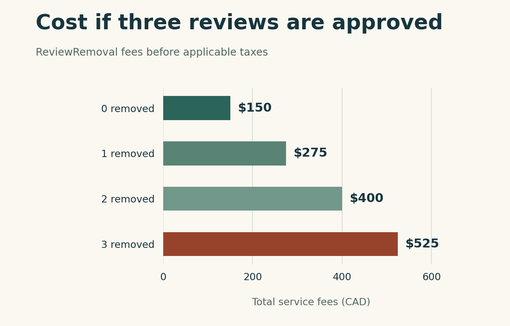

Published by ReviewRemoval. Authorship, sources and correction standards.
On this page
A person checking a clinic before booking a consultation may be looking for clear information about the provider, the procedure and the fees. A review that names a practitioner who has never worked at the clinic or shows someone else’s identifiable treatment information calls for a closer look. ReviewRemoval helps Canadian medical aesthetics clinics assess the public post and work out what to report.
Request a free med spa assessment
Read the post for a specific policy concern
Separate the statement you can verify from the sentiment. For example, “this provider works at another clinic” can be checked using publicly listed branches or practitioners. A criticism of discomfort or an outcome from a genuine visit belongs in the clinic’s care and complaints process. Google’s content rules cover issues such as fake engagement, harassment and some personal information. Google Maps contribution policy.
If several posts use the same language, list their links and dates. If the wording is vague, gather more facts before attributing the posts to a competitor or assuming they were coordinated. Check a publicly visible review for policy signals.
Keep patient information in the clinic
Use the clinic’s normal privacy and complaint process. A public response should avoid confirming a patient relationship or explaining the specific treatment. Ontario’s physician regulator warns about confidentiality when physicians consider answering a negative review. Apply the guidance of the professional regulator that governs your practitioners. CPSO guidance for Ontario physicians.
For the first assessment, share the public link and a short, general explanation. Ask the clinic’s privacy lead how to handle copies of posts that themselves contain sensitive material. Leave identifying details out of public replies and assessment notes.
Check the cost for the reviews you approve
Ask which reviews have enough evidence before approving a batch. If you identify five suspicious posts and paid work proceeds on only three, the upfront charge applies to those three. Check the written scope before paying.

View chart data
| Outcome | Service fees before tax |
|---|---|
| 0 removed | CAD $150 |
| 1 removed | CAD $275 |
| 2 removed | CAD $400 |
| 3 removed | CAD $525 |
Compare the possible totals with the reporting work you want handled. Give each review and each location its own line in the case file so you can match the quote to the posts it covers.
Start with the public facts
A free assessment can help you decide which posts to focus on and which complaints to handle through the clinic. If you approve paid work, ReviewRemoval can prepare the report and manage agreed follow-up, including an appeal where eligible. Google’s review reporting and appeal guidance.
For approved work, ReviewRemoval charges CAD $50 upfront per review and CAD $125 per successful removal, before applicable taxes. See what the fees cover.
Need help with a specific review?
Share the public review link and a brief description of the policy concern. Keep treatment records, appointment details and patient photos within the clinic.
Request a free med spa assessment